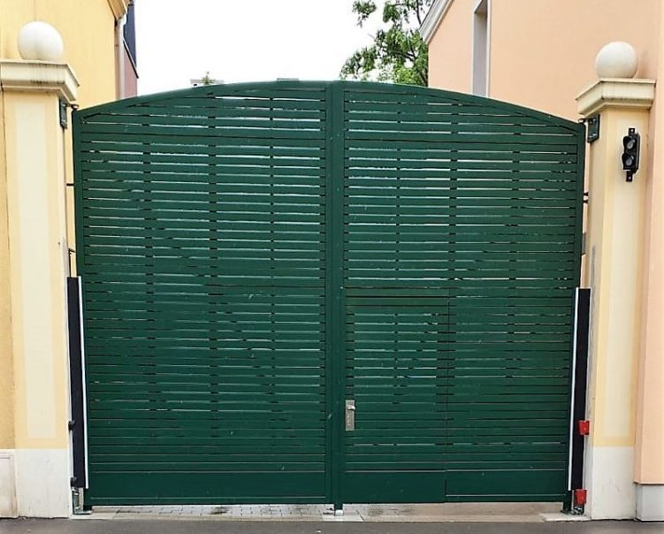
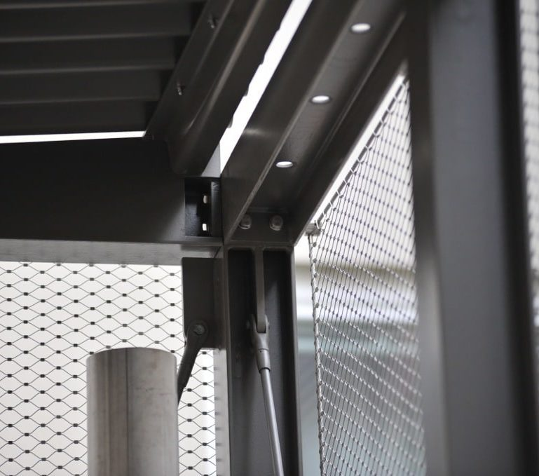
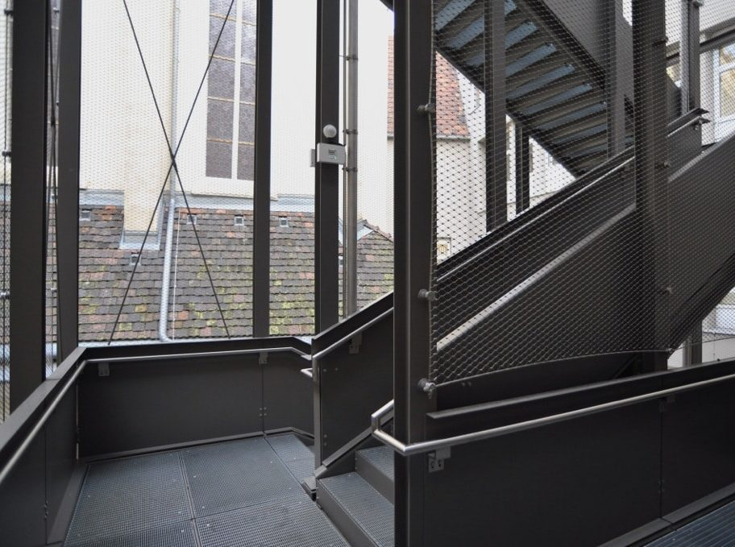
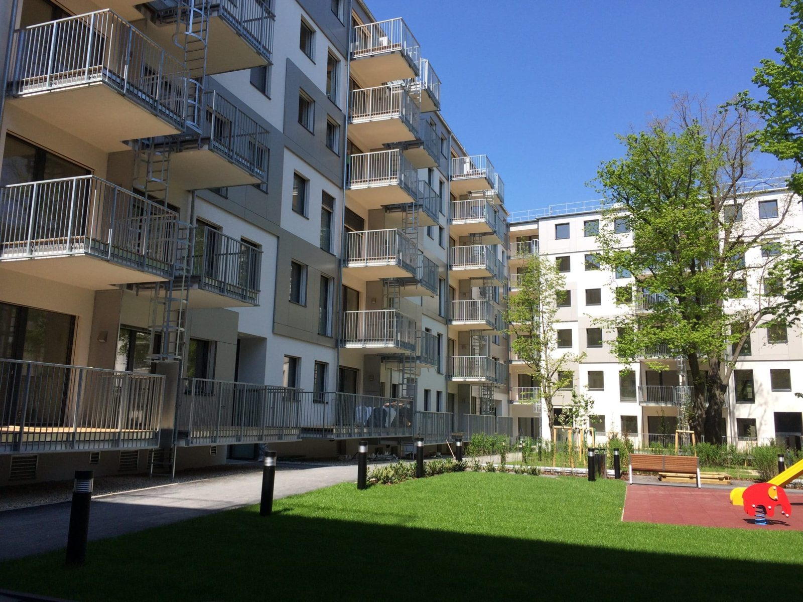
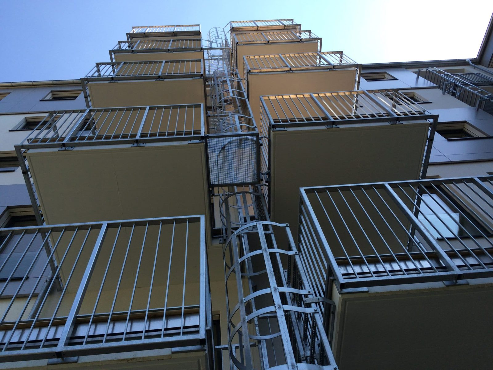
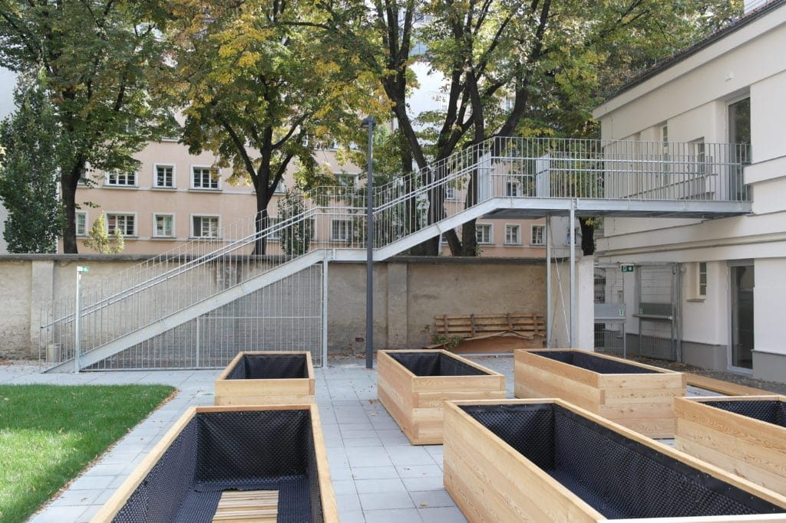
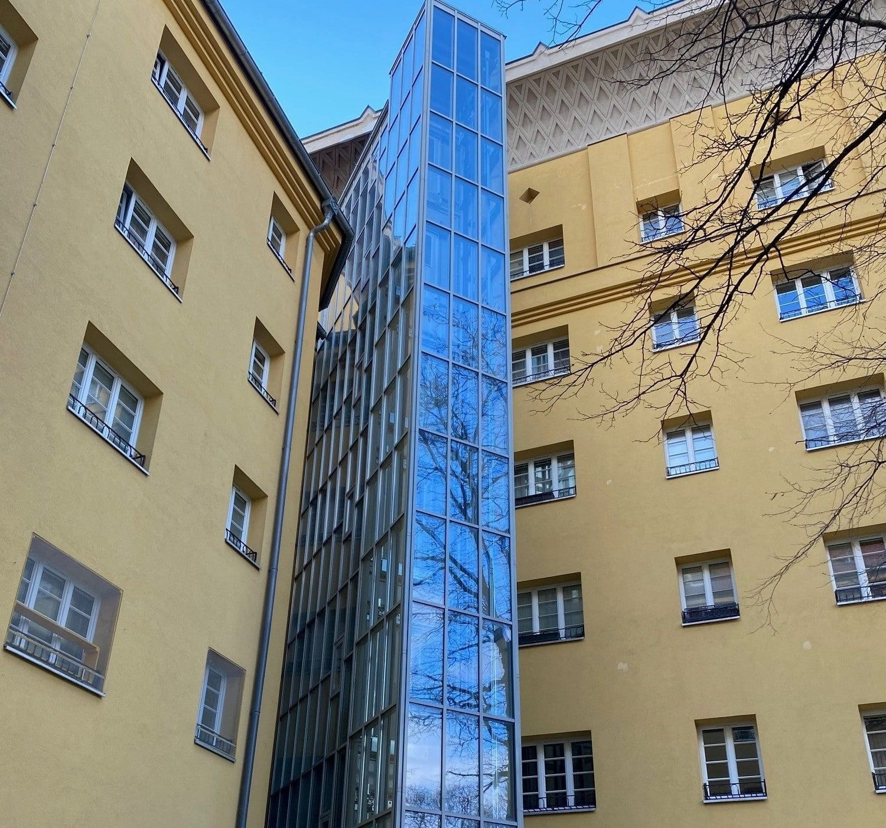
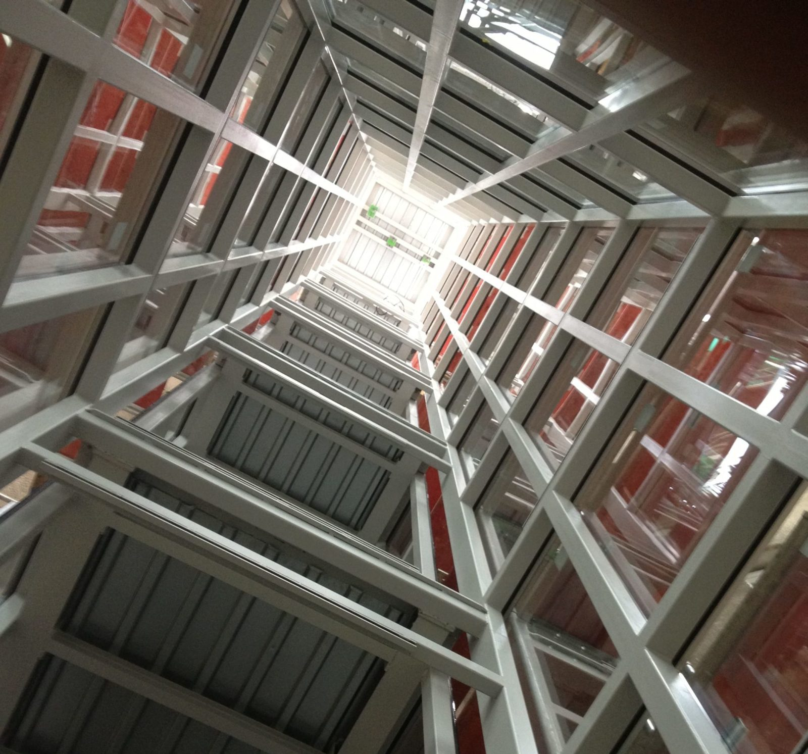
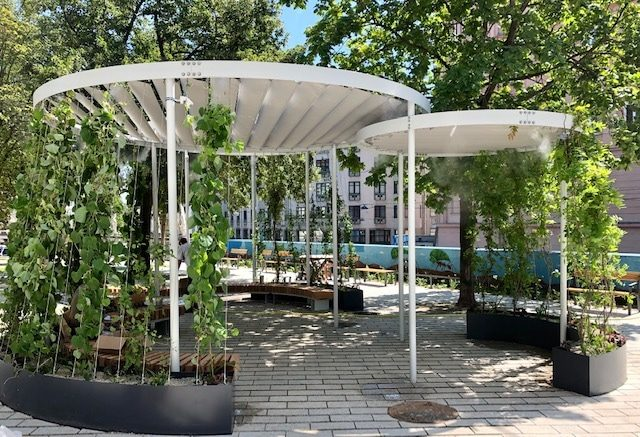

Stahl & Holz
Einfahrtstor mit Zugangstüre
Stahlkonstruktion in Kombination mit einer Holzverkleidung aus Lärche, lackiert, mit automatischem Antrieb.
Referenzen
Ein kleiner Einblick: Aufmaß, Planung, Anfertigung und Montage aus einer Hand – in Aluminium, Edelstahl und Stahlbau.
Stahlbau

Stahlkonstruktion in Kombination mit einer Holzverkleidung aus Lärche, lackiert, mit automatischem Antrieb.

Stahlkonstruktion verzinkt und pulverbeschichtet mit Edelstahlnetz.

Trägerkonstruktion mit Stahlblechgeländer, Gitterroststufen und Edelstahlnetz zur Vogelabwehr.

Mit Vierkantfüllung und Fluchtleitern – Stabgeländer verzinkt.

Stabgeländer verzinkt mit Fluchtleitern, Detailansicht der Befestigung.

Feuerverzinkte Stiegen- und Podestkonstruktion mit Geländer und Gitterroststufen.
Aluminium & Glas

Stahlturm mit Isolierverglasung und Zugangsbrücken.

Stahl-Formrohrkonstruktion inklusive Isolierverglasung.

Stahlrohre und Träger inklusive färbiger Acrylplatten beziehungsweise Stahl-Unterkonstruktion mit Holzlamellen.
Öffentliche Auftraggeber
Stahltreppe, Geländer, Handläufe sowie Gitterroste und -stufen, feuerverzinkt.
Verbindungsgang zwischen zwei Gebäuden: Stahlträgerkonstruktion, Stahlglasfassade mit 2-fach-Isolierverglasung, diverse Aluminiumportale, Alucobond-Verkleidung.
Glastaschengeländer mit Edelstahlhandlauf, Geländerkonstruktion mit Senova-Interior-Platten.
Stahlgeländer pulverbeschichtet inklusive Glasfüllung und Edelstahlhandläufe.
Fluchttreppe und Geländer feuerverzinkt, Handläufe und Geländerrahmen Edelstahl geschliffen, Edelstahlseilnetz-Füllung.
Tränenblech, Niroblech, Verkleidung und Leiterbügel.
Windfang-Stahlträgerkonstruktion, Stahlglasfassade mit 3-fach-Isolierverglasung, Aluminium-Eingangsportale.
Überdachungen und Gitterrostkonstruktionen als Sonderanfertigung.
Eingangstor und Zaun aus geschmiedetem Stahl, verzinkt und pulverbeschichtet.
Die Projektbeschreibungen entsprechen den Angaben der bestehenden Website. Jahresangaben sind dort nicht vermerkt und wurden daher bewusst nicht ergänzt.